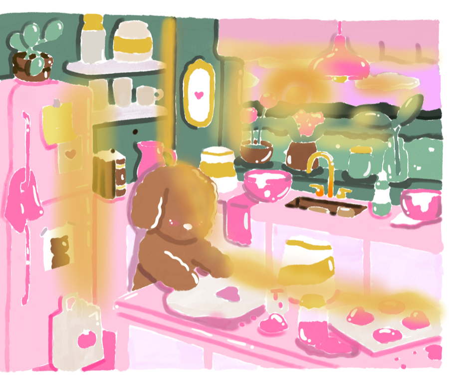
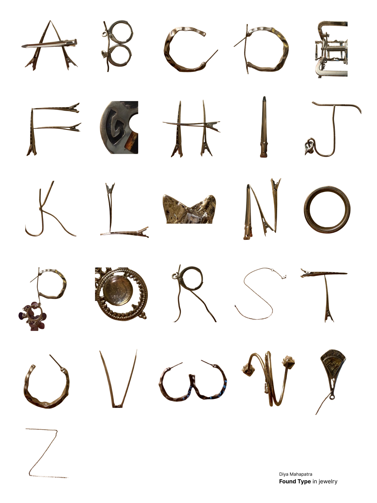

Digital Art Painting exploration on Procreate 3D / Graphic Design
Personal iOS widget concept
3D / Graphic Design
Personal iOS widget concept
 UI Exploration
Personal profile built with Claude
UI Exploration
Personal profile built with Claude
 Visual Study
Gradient exploration in Photoshop
Visual Study
Gradient exploration in Photoshop
 Branding
Resonance energy drink concept
Branding
Resonance energy drink concept

Typography Experimental letterforms